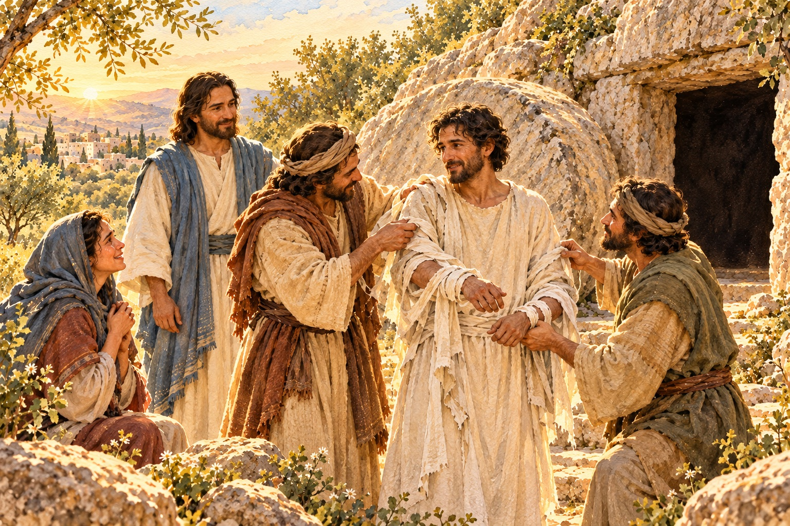

面對一個拖延已久的問題，需要勇氣。
我們知道有些話應該說清楚，有些誤會需要處理，有些失序的地方需要重新整理。但只要想到，一開口可能又會受傷，一動手就得面對許多麻煩，心裡便想：「再等一等吧。」
於是，問題留在那裡，日子卻繼續往前走。有些距離，就在一次又一次的等待裡，變得更難靠近。
在陪伴社區裡的孩子、推動教會事工的過程中，我也曾遇見令人無力的僵局。

看見需要，卻不知道該從哪裡著手；心裡想改變，卻又害怕碰觸那些已經累積很久的困難。
這時，我們會禱告，求主帶來轉機，也盼望祂使人心得著更新。
而在尋求祂的過程中，我們也可能慢慢看清楚：眼前有一件事，需要自己去面對。有一場談話，不能一直推遲；有一個責任，不能繼續含糊；也有一份幫助，是自己需要承認並開口尋求的。
《約翰福音》第十一章，帶我們來到一個充滿悲傷的地方。耶穌在那裡所說的一句話，也邀請我們思想，怎樣回應眼前真實而沉重的處境。
祂先走進人的悲傷
拉撒路病了，馬大與馬利亞託人把消息告訴耶穌。等到耶穌來到時，拉撒路已經在墳墓裡四天了。
對這個家庭而言，這是失去至親的痛。
馬大和馬利亞先後向耶穌說，如果祂早在這裡，她們的兄弟就不會死。這些話裡，有對主的信任，也有來不及挽回的遺憾。
耶穌看見馬利亞和同行的人哭泣，心裡悲歎，也流下了眼淚。
在祂叫拉撒路出來以前，祂已經走進了人的悲傷。
這個細節，值得我們多停留一會兒。
當人正在痛苦裡，我們有時太急著說明道理、提出方法，卻忘了先聽他把難過說完。即使心裡盼望事情好轉，也需要容許眼淚有它的位置。
耶穌的眼淚，使我們看見祂對這個家庭的愛。我們可以把無助與遺憾帶到祂面前，也在陪伴別人的時候，學習多一份耐心與體恤。
挪開石頭，面對真實
後來，耶穌來到墳墓前。那是一個洞，洞口有一塊石頭擋著。
耶穌對在場的人說：
「你們把石頭挪開。」
馬大立刻提醒祂，拉撒路已經死了四天，身體恐怕已經有了氣味。
這是一個非常真實的回應。她所面對的，是自己弟兄已經死去的事實。那塊石頭背後，承載著這個家庭最深的失落。
耶穌聽見她的話，仍引導她信靠、仰望上帝的榮耀。接著，
在場的人就把石頭挪開了。
他們做了一件可以回應主的事：照著祂的吩咐，挪開擋在洞口的石頭。
讀到這裡，我們也可以問自己：在今天的生活裡，有什麼是我已經知道需要面對，卻一直避開的？
也許是一次認真的道歉，一場需要釐清責任的談話，或是一個明知有問題、卻因為怕麻煩而沒有調整的做法。
「挪開石頭」這個畫面，可以幫助我們思想自己的回應。我們願意把問題說清楚，承認自己做得不好的地方，也願意為合宜的改變付出時間與心力。
這裡所說的石頭，是我們需要面對的問題。我們仍要記得，
站在問題裡的每一個人，都需要被尊重、被認真理解。
有時，在事情開始被處理之前，我們需要先放下那句輕易作出的判斷：「他就是這樣，永遠不會改。」
讓人活過來的，是主
石頭挪開之後，耶穌舉目向父禱告，隨後大聲呼喚拉撒路出來。拉撒路便出來了，手腳還裹著布，臉上包著手巾。
這個神蹟，使人看見耶穌所賜的生命，也使許多在場的人信了祂。
在這段記載裡，人可以挪開石頭，卻無法使已經死去的人重新活過來。賜生命的能力，在耶穌身上。
這個分別，幫助我們承擔責任，也容許我們承認自己的有限。
面對一段受傷的關係，我們可以真誠道歉，卻無法要求對方立刻原諒；面對一個長久的困難，我們可以開始整理、尋求協助，卻不能保證所有問題很快就會解決。
我們仍然可以忠心去做今天該做的事，也把自己無法掌握的結果，繼續帶到主面前。
拉撒路復活的記載，讓我們把盼望放在耶穌身上。祂曾向馬大表明，復活與生命在祂。我們讀這個故事，是為了更深認識並信靠祂，也學習在自己的處境裡回應祂。
「復活在我，生命也在我。信我的人雖然死了，也必復活；」
當我們面對的事情，還沒有出現所盼望的改變，仍可以來到這位主面前，繼續求問、等候，也領受身邊的人所給的扶持。
我們可以認真承擔，也可以承認需要幫助。

伸出手，幫助他走下去
這個故事，還沒有停在拉撒路走出墳墓的那一刻。
耶穌接著吩咐身旁的人，解開纏裹他的布，讓他走。
「解開，叫他走！」
前面，他們回應主的話，挪開石頭；現在，他們又被邀請伸出手，幫助這個剛從墳墓裡出來的人。
這讓我們想到，陪伴一個人，也有許多需要細心回應的時刻。
當一位弟兄姐妹願意說出自己的困難，我們可以認真聽，
和他一起尋找合適的幫助；當一個人願意重新開始，我們也可以給他學習與調整的空間，留意他的需要，而不只是反覆提起過去的失敗。
有時，一句尊重的話，一項清楚的安排，或一次願意陪同的行動，就能使人比較有力量走下去。
我們未必能解決對方所有的困難，但可以讓他知道，這段路上，有人願意陪伴。
同時，合宜的陪伴也需要分辨。哪些事是自己能幫忙的，哪些需要與同工合作，哪些應該尋求更適合的協助，都可以誠實說明，一起討論。
讓人重新站起來的過程，值得我們付出耐心，也值得我們認真對待每一個人的尊嚴。
今天，你也許正面對一個拖延已久的問題。
把它帶到主面前，先問自己：我可以怎樣更誠實地看待這件事？有哪一份責任，是我今天能夠回應的？又有誰，可以與我一起面對？
當你看見一件該做的事，就為它預備時間，開始去做。
去，把眼前那塊石頭挪開。帶著主的憐憫面對真實，也把自己與身邊的人，交在那位賜生命的主手中。
M+ 實戰操練
反思提問（Connection）
在你的家庭、工作或服事中，有哪一個問題，因為你怕難堪、怕衝突或怕麻煩，而一直沒有面對？
在這件事上，你需要承認什麼？有哪一件事是自己能負責的，又有哪些部分需要與人一起承擔？
當你想幫助另一個人時，你是否也願意先聽他的感受，了解他真正的需要？
真理宣告（Transition）
我宣告，耶穌是賜生命的主，也是我在困難中的盼望。
我願意把真實的處境帶到祂面前，承認自己的有限，也回應祂讓我看見的責任。我願意學習誠實、道歉、求助與合作，帶著憐憫去面對問題。
求主使我的付出能尊重人、扶持人，也教導我把無法掌握的結果，交託在祂手中。
今日行動（Action Plan）
選擇一個你一直拖延的問題，先用幾句話寫下已經知道的事實，分清楚自己的猜測與感受，再找出一件今天可以回應的事。
可以約一次談話，向一個人道歉，釐清一項分工，或請一位合適的同工、朋友協助你面對。
行動以前，先想一想：我希望怎樣把問題說清楚？我可以怎麼表達，使對方仍然感受到尊重？
向主禱告：
「主啊，求祢賜我勇氣，面對自己一直躲開的事；也賜我溫柔，在處理問題的時候，仍然看見人的需要。願我忠心做好能做的，把自己做不到的交託給祢，繼續信靠祢。」